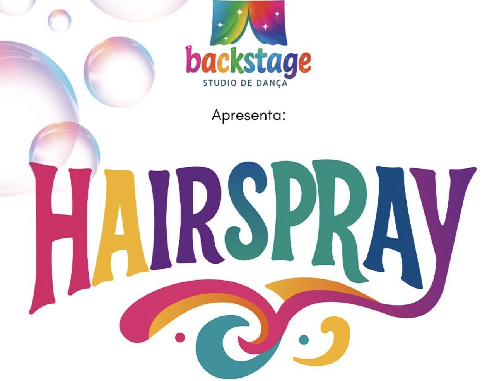
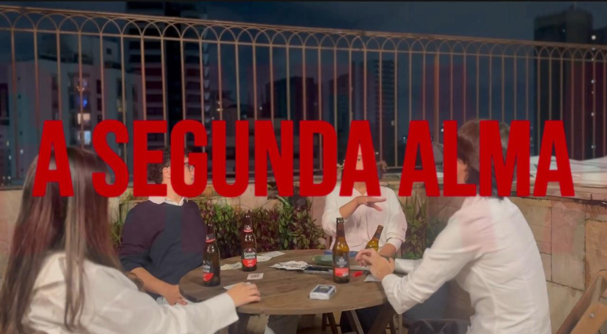
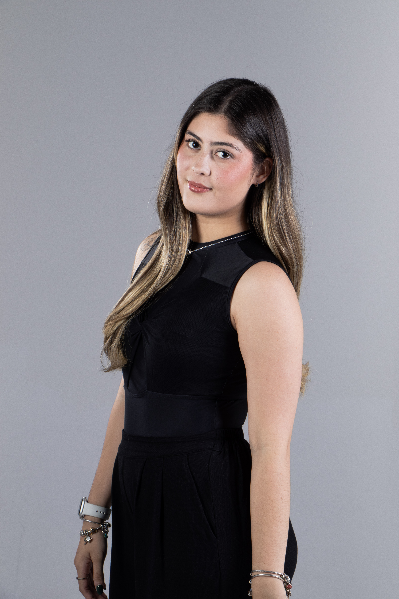

Atriz • Dançarina • Cineasta
Explore meus trabalhos mais recentes em musicais amadores e produções audiovisuais estudantis.
Ver ProjetosDe Manaus para São Paulo. Conheça minha história, formação acadêmica em Cinema e teatro técnico.
Conhecer TrajetóriaEntre em contato para parcerias, trabalhos artísticos, projetos cinematográficos ou produções.
Fale ComigoApresentação da obra Rio 2 (Disney), produzido por Backstage Studio de Dança. Atuação como personagem secundário e dançarina.
Apresentação da obra clássica Rei Leão (Disney), produzida por Backstage Studio de Dança. Participação como dançarina.

Apresentação da icônica obra Hairspray produzida por Backstage Studio de Dança. Performance atuando como antagonista e dançarina.
Produção estudantil para a música da artista Kenzi. Atuação multifacetada como atriz, roteirista e editora.

Curta-metragem estudantil adaptado a partir do célebre conto "O Espelho" de Machado de Assis. Atuação como produtora e atriz.
A Ascensão olímpica do Brasil além do Futebol, uma nova potência mundial- Mini documentário, 2026.

Nascida em Manaus, a arte sempre esteve presente nos meus primeiros passos: comecei a dançar com apenas 1 ano de idade e experimentei os palcos do teatro brevemente durante a infância.
Em busca de expandir meus horizontes no cinema e na atuação, mudei-me para São Paulo em 2026. Atualmente, curso Cinema e Audiovisual na ESPM e me dedico a um curso técnico de atuação, com formação prevista para Julho de 2027.
"Unindo a expressão do corpo na dança, a entrega da atuação e a visão por trás das câmeras no cinema."
Disponível para projetos cinematográficos, espetáculos de dança, peças de teatro e marcas que conversem com minha estética estética e propósito.
© 2026 Gia Perez. Todos os direitos reservados.